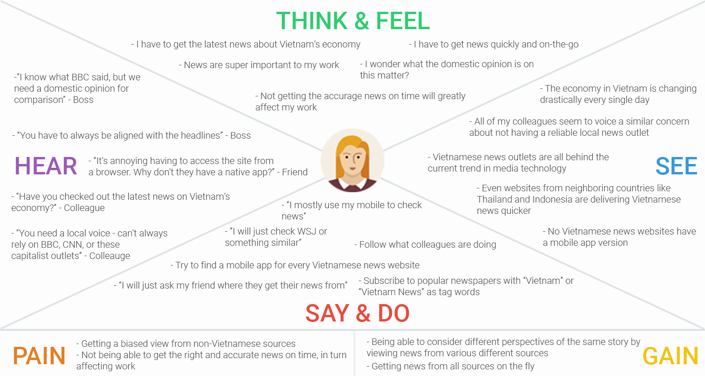
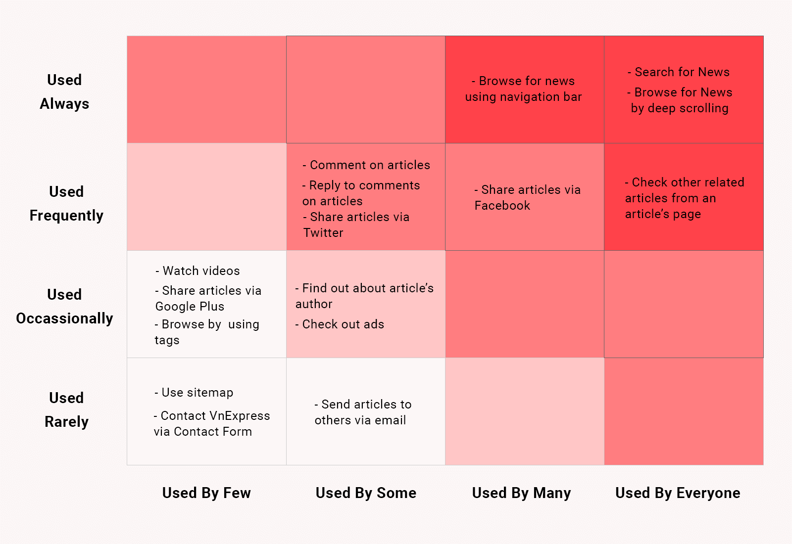

Bringing VnExpress to the global scale
Founded in 2001, VnExpress is one of the most popular news websites in Vietnam. Statistically, it ranks only after Yahoo, Google, and BBC Vietnam. Despite this high level of popularity amongst Vietnamese-speaking readers, VnExpress has never been considered as the go-to news outlets for those who don't speak the language. The reason was simply because VnExpress didn't offer any other languages besides its native Vietnamese.
It wasn't until 2013 that the company's management and editorial leadership decided that this needed to change. An executive decision was made to build and launch a sister website to VnExpress that would be entirely in English - VnExpress International. The initiative was essentially VnExpress's response to the rising interest of international readers in Vietnam's political and economic affairs.

My first foray into UX Design
For this project, VnExpress put together a completely new team with the designated responsibility of bringing the product through a full design and development cycle, from concept to launch. In this respect, I was brought on board to help a small design team deliver the overall experience and information architecture for the site.
While the original plan was only for me to help design an early concept, the great chemistry I shared with the whole product team had convinced me to stay back and oversee the project's development until its successful launch in June 2015. Named as VnExpress International, the website has since grown into a trusted source for non-Vietnamese-speaking readers who are looking to access reliable news regarding not only Vietnam, but also of the world. Personally, this was my first ever professional engagement in UX Design, and it certainly has provided me with a tremendous amount of learnings that would later help me confirm my passion for this amazing field.
Bringing VnExpress to the mobile screens
While my primary focus was mostly on VnExpress International during my time at the company, I simultaneously had a great opportunity to engage in yet another exciting project. This time, the long term objective was to build a native mobile application for VnExpress.
Again, our design team was offered full ownership of this project, and our hard work paid off when the iOS and Android versions of VnExpres were finally released in September 2014.

Building a foundation for better design thinking
UX Design is generally a new area for many Vietnamese organizations. VnExpress doesn't stand out as an exception. While the creative talent present at the company was impressive, almost all of these designers saw their job as purely visual or graphic design.
As such, to inflict a user-centered design thinking into the product development process was essentially one of my goals at VnExpress. In this respect, here's a small glimpse into some of the design methods I introduced to the company throughout the two projects we worked on. It started first, of course, with a design process.

Based on NNG Group's "Design Thinking 101"
Empathy maps
VnExpress designers mostly relied on their own professional instincts or assumptions to make the best guesses as to what their users' context normally was. User research was commonly mixed with market research, and thus there existed a big gap between users' needs and what the product could offer.
One of the exercises which I personally love and brought to the table was empathy mapping. The objective was simple: to create a sense of empathy between designers and their users.
Experience maps
Sometimes it was hard to get the wider product team on the same ground and solve problems together. People's minds and visions weren't aligned, and it was typically because they weren't looking at the same problem or picture.
After I introduced the practice of experience mapping to the team, everyone began to speak the same language as we were beginning to see exactly where we stood, what our challenges were, what opportunites were present, and what our goals should be.

Red-route analysis
A lot of people were amazed at the effectiveness of red-route analysis when it came to deciding which features to prioritize. Prior to my arrival, I was told that people had been fired and endless nights had been spent at the office debating about which component was more important than which.
While a lot of other factors came into play when deciding on the order of the team's product design backlog, a simple red-route analysis chart helped to answer some of the more straightforward doubts.
